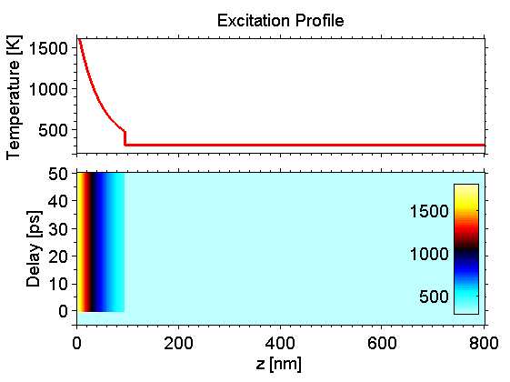
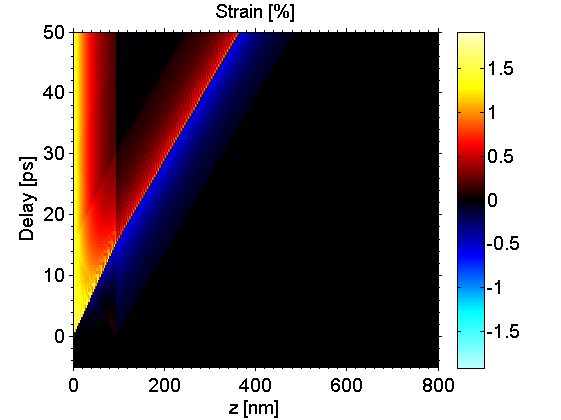
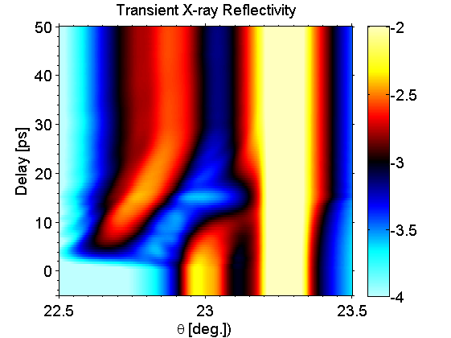
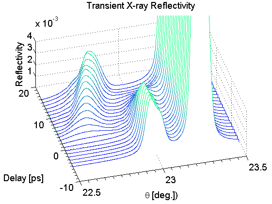

Peak Splitting
In this example a 95nm metallic SRO thin film on dielectric STO substrate is directly excited by short laser pulses. The excitation is modelled via an instantaneous temperature jump using the heat simulation. The subsequent coherent phonon dynamics are calculated by the phononNum class. These resualts are then input into the XRDdyn class to calculate the transient X-ray reflectivity.
The simulation can be compared to the experiments given in Ref. [1].
Contents
- general setting
- Set simulation parameters
- Initialize the Sample
- Initialize the atoms of the Sample Structure
- Initialize the unitCells of the Sample
- SRO layer
- STO substrate
- Initialize the Sample Structure
- Initialize the Heat Diffusion Simulation
- Calculate Temperature Pattern
- Plot the Results of the Heat Simulations
- Initialize the Phonon Dynamics Simulation
- Calculate Strain Pattern
- Plot the Results of the Phonon Dynamics Simulations
- Initilaize dynamic XRD Simulation
- Homogeneous Dynamic XRD Simulations
- Inhomogeneous Dynamic XRD Simulations
- Plot the Results of the Dynamic XRD Simulations
- References
general setting
close all; % close all previous figures clear all; % clear the previous workspace cacheDir = './cache'; % set the cache folder forceRecalc = false; % force the simulations to recalc % define units and constants objects u = units; const = constants;
Set simulation parameters
time = (-5:0.5:50)*u.ps; % the time we want to simulate E = 8047*u.eV; % energy of X-rays sp = 0.5; % polarization factor: % 0 -> S; 0.5 -> mixed; 1 -> P theta = (22.5:0.001:23.5)*u.deg; % theta range initTemp = 300*u.K; % initial temperature of the sample fluence = 20*u.mJ/u.cm^2; % fluence we pump the sample heatDiffusion = false; % disable heat diffusion
Initialize the Sample
disp('Initialize sample ...');
Initialize sample ...
Initialize the atoms of the Sample Structure
O = atomBase('O'); Ti = atomBase('Ti'); Sr = atomBase('Sr'); Ru = atomBase('Ru');
Initialize the unitCells of the Sample
lattice constants in Angstrom
cSTOsub = 3.905 *u.ang;
cSRO = 3.9493 *u.ang;
% sound velocities [nm/ps]
svSRO = 6.312 *u.nm/u.ps;
svSTO = 7.800 *u.nm/u.ps;
SRO layer
propSRO.aAxis = cSTOsub; % aAxis propSRO.bAxis = cSTOsub; % bAxis propSRO.debWalFac = 0; % Debye-Waller factor propSRO.soundVel = svSRO; % sound velocity propSRO.optPenDepth = 44*u.nm; % optical penetration depth [nm] propSRO.thermCond = 5.72*u.W/(u.m *u.K); % heat conductivity [W/m K] propSRO.linThermExp = 1.03e-5; % linear thermal expansion propSRO.heatCapacity = 464.419; % heat capacity [J /kg K] SRO = unitCell('SRO','SRO',cSRO,propSRO); SRO.addAtom(O,0); SRO.addAtom(Sr,0); SRO.addAtom(O,0.5); SRO.addAtom(O,0.5); SRO.addAtom(Ru,0.5);
STO substrate
propSTOsub.aAxis = cSTOsub; % aAxis propSTOsub.bAxis = cSTOsub; % bAxis propSTOsub.debWalFac = 0; % Debye-Waller factor propSTOsub.soundVel = svSTO; % sound velocity propSTOsub.optPenDepth = Inf; % optical penetration depth [nm] propSTOsub.thermCond = 12*u.W/(u.m *u.K); % heat conductivity [W/m K] propSTOsub.linThermExp = 1e-5; % linear thermal expansion propSTOsub.heatCapacity = @(T)(733.73 + 0.0248.*T - 6.531e6./T.^2); % heat capacity [J/kg K] STOsub = unitCell('STOsub', 'STOsub', cSTOsub, propSTOsub); STOsub.addAtom(O,0); STOsub.addAtom(Sr,0); STOsub.addAtom(O,0.5); STOsub.addAtom(O,0.5); STOsub.addAtom(Ti,0.5);
Initialize the Sample Structure
S = structure('SRO on STO'); % add unit cells to the structure S.addSubStructure(SRO,240); S.addSubStructure(STOsub,2000); % add a static substrate to the sample structure substrate = structure('STOsubstrate'); substrate.addSubStructure(STOsub,1000000)% S.addSubstrate(substrate); distances = S.getDistancesOfUnitCells(); % these are the distances of each unitCell from the surface
Initialize the Heat Diffusion Simulation
Provide the sample structure for the heat simulation.
H = heat(S,forceRecalc,heatDiffusion);
H.setCacheDir(cacheDir); % set the cache directory
Calculate Temperature Pattern
Here calculate the temperature map and temperature difference map for the given time, fluence and initial temperature.
[tempMap deltaTempMap] = H.getTempMap(time,fluence,initTemp);
Elapsed time for _temperatureAfterDeltaExcitation_: 1.7997 seconds. Elapsed time for _tempMap_: 1.8682 seconds. _tempMap_ saved to file .\cache\tempMap_0f6107991e712ef1d608878ec3b7b726_5e6401837bb34d229f0c833cd2eb01c7.mat
Plot the Results of the Heat Simulations
figure(1) % plot the temperature map h1 = subplot(2,1,1); plot(distances/u.nm,tempMap(time == 0,:), '-r', 'LineWidth', 2); set(gca, 'XTickLabel', {}, 'XMinorTick', 'on', 'YMinorTick', 'on', 'TickDir', 'out'); box on; xlim([0 800]); ylim([200 1600]); title('Excitation Profile'); ylabel('Temperature [K]'); h2 = subplot(2,1,2); kk = surf(distances/u.nm,time/u.ps,tempMap); set(kk, 'LineStyle', 'none'); xlabel('z [nm]'); ylabel('Delay [ps]'); set(gca, 'XMinorTick', 'on', 'YMinorTick', 'on', 'TickDir', 'out'); axis([0 800 time(1)/u.ps time(end)/u.ps]); box on; colorbar('Location', 'East'); colormap fireice; set(h1, 'Position', [0.15 0.6 0.8 0.3]); set(h2, 'Position', [0.15 0.15 0.8 0.4]);
Initialize the Phonon Dynamics Simulation
Provide the sample structure for the phonon dynamics simulation
P = phononNum(S,forceRecalc);
P.setCacheDir(cacheDir); % set the cache directory
Calculate Strain Pattern
Here we calculate the strain map for the given temperature, and temperature difference map and the time vector.
strainMap = P.getStrainMap(time,tempMap,deltaTempMap);
Calculating linear thermal expansion ... Calculating coherent dynamics with ODE solver ... ODE integration: 100% [..................................................] Elapsed time for _strainMap_: 6.8926 seconds. _strainMap_ saved to file .\cache\strainMapNum_d508d7a8d93fd9efd105affb43e62c09_0a08c56118248a9d212da2a4e7897334.mat
Plot the Results of the Phonon Dynamics Simulations
figure(2); imagesc(distances/u.nm,time/u.ps,100*strainMap); set(gca, 'Ydir', 'normal', 'XMinorTick', 'on', 'YMinorTick', 'on', 'TickDir', 'out'); axis([0 800 time(1)/u.ps time(end)/u.ps]) caxis([-100*max(max(strainMap)) 100*max(max(strainMap))]); colormap fireice(255); colorbar('location', 'EastOutside'); xlabel('z [nm]'); ylabel('Delay [ps]'); title('Strain [%]'); view(2);
Initilaize dynamic XRD Simulation
disp('Initilaize dynamic XRD Simulation'); D = XRDdyn(S,forceRecalc,E,sp); % set main parameters D.setCacheDir(cacheDir); % set the cache directory D.setQzByTheta(theta); % set q_z range
Initilaize dynamic XRD Simulation
Homogeneous Dynamic XRD Simulations
Here we calculate the rocking curve for no strain at all for the full sample .
Rh = D.homogeneousReflectivity(); % thats all % define an instrumental function to convolute the result with: mu = 0.4; A1 = 1; A2 = 10/16; sep = 0.06*u.deg; width = 0.025*u.deg; instFunc = @(theta)(A1*pseudo_voigt(theta,width,mu)+A2*pseudo_voigt(theta-sep,width,mu)); % carry out the convolution with the instrumental function [Rhi xc] = D.convWithInstrumentFunction(Rh,theta,instFunc); % Plot the Results of the homogeneous Dynamic XRD Simulations figure(3) semilogy(theta/u.deg, Rh, '-b', 'LineWidth', 1); hold on semilogy(theta/u.deg, instFunc(theta-xc)/2, '-k', 'LineWidth', 1); semilogy(theta/u.deg, Rhi, '-r', 'LineWidth', 2); hold off axis([theta(1)/u.deg theta(end)/u.deg 1e-6 1]); set(gca,'YScale', 'log'); grid on; box on; title('Homogeneous XRD'); xlabel('\theta [deg.]'); ylabel('Reflectivity'); lh = legend('Rock. Curve', 'Inst. Func.', 'Conv. Rock. Curve'); set(lh, 'Location', 'NorthWest', 'FontSize', 10); set(gca, 'Ydir', 'normal', 'XMinorTick', 'on', 'YMinorTick', 'on', 'TickDir', 'out');
Calculating _homogenousReflectivity_ ... Elapsed time for _homogenousReflectivity_: 0.12136 seconds.

Inhomogeneous Dynamic XRD Simulations
Now we calculate the inhomogeneous dynamic XRD simulation for each time step each single strain for each unit cell in the sample
Calculate all strains that should be applied to all unique types of unit cells in the sample structure in order to save computational time.
strainVectors = P.getReducedStrainsPerUniqueUnitCell(strainMap,100);
R = D.getInhomogeneousReflectivity(strainMap,strainVectors); % thats all
Caclulate all _refTransMatricies_ ... Elapsed time for _refTransMatricies_: 1.2206 seconds. _refTransMatrices_ saved to file .\cache\allRefTransMatrices_cee2ee59713bb75a5f43ce51fc923d68_d4389ae20aec3d0f589d42f26ef878fb.mat Calculating _inhomogenousReflectivity_ ... Elapsed time for _inhomogeneousReflectivity_: 40.2354 seconds. _inhomogeneousReflectivity_ saved to file .\cache\inhomogeneousReflectivityDyn_cee2ee59713bb75a5f43ce51fc923d68_42713a97d46f6fa19d581541f8c8ab13.mat
Plot the Results of the Dynamic XRD Simulations
% convolute with instrument function first RI = D.convWithInstrumentFunction(R,theta,instFunc); figure(4) kk = surf(theta/u.deg,time/u.ps,log10(RI)); set(kk, 'LineStyle', 'none'); axis([theta(1)/u.deg theta(end)/u.deg time(1)/u.ps time(end)/u.ps]) box on; colorbar; colormap(fireice(256)); caxis([-4 -2]); xlabel('\theta [deg.])'); ylabel('Delay [ps]'); title('Transient X-ray Reflectivity'); set(gca, 'XMinorTick', 'on', 'YMinorTick', 'on', 'TickDir', 'out');
tPlot = (-5:1:16)*u.ps; figure(5) waterfall(theta/u.deg,tPlot/u.ps,RI(finderb(tPlot,time),:)); xlabel('\theta [deg.])'); ylabel('Delay [ps]'); zlabel('Reflectivity'); title('Transient X-ray Reflectivity'); view([-15,65]); zlim([1e-4 0.4e-2]); caxis([0 0.4e-2]); colormap(winter); set(gca, 'XMinorTick', 'on', 'YMinorTick', 'on', 'TickDir', 'out'); box off; grid on;
disp('finished');
finished
References
- D. Schick, P. Gaal, A. Bojahr, W. Leitenberger, R. Shayduk, A. Hertwig, I. Vrejoiu, M. Herzog & M. Bargheer (2013). Ultrafast x-ray diffraction studies of photoexcited coherent phonons in SrRuO3 thin films. New Journal of Physics, submitted.